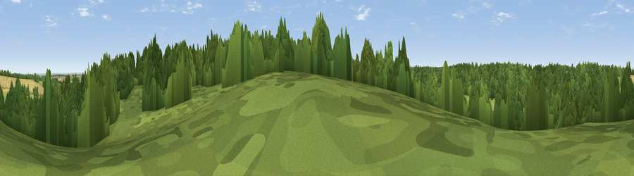

Viewpoint near Barham
#42195 in England · top 81% of its area beats it · near BarhamThe view, rendered

A 360° render of this exact spot computed from the terrain model, tree cover and land cover — summer colours, afternoon light, calibrated against photographs of famous viewpoints. Real trees, hedges and buildings will differ in detail.
The panorama
Grey silhouette: terrain skyline in each direction (720 bearings, Earth curvature and refraction included). Dashed green: skyline with trees (+15 m) and buildings (+8 m) as obstacles. Blue strip: how far the ground is visible on each bearing.
Where the view opens
Wedge length = distance to the farthest visible ground on that bearing (vegetation-aware). Rings at 10, 25 and 50 km.
What fills the view
69% woodland · 22% grassland · 8% cropland
Angular shares of the visible panorama (visual magnitude), not map area. Landscape diversity 0.36 (0–1 Shannon).
Key numbers
More beautiful places nearby
The staircase of upgrades: each row has a higher view potential than everything closer. Driving times are estimates from straight-line distance, calibrated against real road routing — check an actual route before setting out.
| Place | Direction | Drive | Score |
|---|---|---|---|
| Viewpoint near Bossingham | NW · 2 km | ~5 min | 34.4 |
| Viewpoint near Bishopsbourne | NNW · 2 km | ~6 min | 35.1 |
| Viewpoint near Chartham | NW · 8 km | ~17 min | 35.2 |
| Viewpoint near Etchinghill | S · 9 km | ~17 min | 48.8 |
| Viewpoint near Brabourne | SW · 10 km | ~19 min | 68.8 |
| Viewpoint near Brabourne | SW · 10 km | ~19 min | 71.9 |
| Viewpoint near Etchinghill | S · 11 km | ~21 min | 76.6 |
| Viewpoint near Etchinghill | SSW · 11 km | ~21 min | 76.9 |
51.19923, 1.12079 · source: screening · position refined by local search. Computed location — check access rights before visiting.